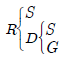
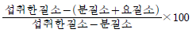
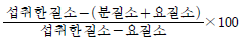
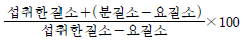
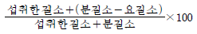
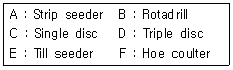
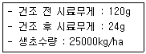
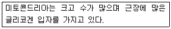

축산기사 (2015-03-08 기출문제)
1과목: 가축육종학
1. 대립유전자(對立遺傳子)의 상호작용에 의한 효과는?
- 평균효과(平均效果)
- 우성효과(優性效果)
- 상위성 효과(上位性效果)
- 상가적 효과(相加的效果)
(정답률: 60%)

2. 산란지수(hen housed production)를 옳게 설명한 것은?
- 일정기간의 총산란수를 기간 내 매일 생존수로 나눈 것
- 일정기간의 총산란수를 그 기간 최초의 마리수로 나눈 것
- 일정기간의 총산란수를 그 기간 마지막 날의 마리수로 나눈 것
- 일정기간의 총산란수를 그 기간 평균 생존수로 나눈 것
(정답률: 66%)
3. 육우의 모색 유전자 적색과 백색 유전자가 대립관계에 있을 때 2천두에 대한 모색을 조사한 결과 적색(red) 720두, 조모색(roan) 960두 및 백색(white) 320두가 조사되었다. 이때 적색 유전자의 빈도는 얼마인가?
- 0.60
- 0.65
- 0.70
- 0.75
(정답률: 72%)
4. 젖소의 후대 검정용 후보 씨 수송아지를 생산하기 위한 씨암소의 자격 요건에 포함되는 것은?(오류 신고가 접수된 문제입니다. 반드시 정답과 해설을 확인하시기 바랍니다.)
- 외모심사 점수가 90점이나 등록 기관에 혈통등록이 안된 것
- 외모심사 점수가 70점이고, 만성질환이 없는 것
- 초산차 이상으로 정상적인 번식기록을 갖고 외모심사 점수는 75점인 것
- 산유능력은 1일 2회, 3⑤일 착유, 3⑤일 보정기록을 기준으로 유전능력평가를 실시하여 가축개량협회에서 정한 선발형질에 대한 유전능력이 상위 4%인 것
(정답률: 71%)
5. 대립유전자간의 상호작용에 의하여 이형접합체의 개체가 동형접합체의 개체보다 성적이 우수한 현상을 무엇이라고 하는가?
- 열성
- 한성
- 초우성
- 돌연변이
(정답률: 84%)
6. 어느 고깃소군의 1일 평균 증체량이 1kg이고, 육종의 목적으로 사용된 군은 평균 증체량이 1.25kg이라고 할 때 선발차는?
- -0.25kg
- 0.0kg
- 0.25kg
- 1.0kg
(정답률: 77%)
7. 어떤 개체의 유전자형을 알기 위하여 열성의 호모개체를 교잡하는 검정교배(Test cross)를 나타낸 것은?
- BB x BB
- BB x Bb
- Bb x Bb
- Bb x bb
(정답률: 81%)
8. 가축의 유전적 개량에 미치는 요인이 아닌 것은?
- 선발강도
- 선발의 정확도
- 유전적 변이
- 일시적 환경효과
(정답률: 86%)
9. 다음 가계도에서 R의 근교계수는?

- 12.5%
- 25%
- 30%
- 50%
(정답률: 75%)
10. 후대검정은 어떠한 경우에 가장 효과적으로 이용할 수 있는가?
- 유전력이 높은 형질
- 개체간의 변이 중 거의 유전적 변이에 의한 형질
- 유전력이 낮고, 한쪽 성에만 발현되는 형질
- 개체선발을 효과적으로 이용할 수 있는 형질
(정답률: 59%)
11. 가축에서 치사 유전자 작용에 의하여 발현되는 형질이 아닌 것은?
- 닭에서의 포복성
- 돼지에서의 헤르니아
- Karakul 면양에서의 회색 피모
- 소에서의 선천성 우모
(정답률: 47%)
12. 환경 변이가 없는 조건에서 사육한 돼지의 165일령 체중이 다음과 같다고 할 때 이형 접합체의 유전자형가는? (단, AA : 120kg, Aa : 110kg, aa : 90kg)
- 5kg
- 10kg
- 15kg
- 30kg
(정답률: 49%)
13. 고깃소에서 교잡종 생산을 위한 품종 선택 시 고려해야할 사항이 아닌 것은?
- 사료 자원과 기후 조건에 대한 적응성이 높아야한다.
- 품종의 차이가 커야한다.
- 난산과 번식상의 문제가 일어나지 않아야 한다.
- 비교적 적은 두수의 수소와 암소로 실시하여야 한다.
(정답률: 80%)
14. 유량에 있어 특정 집단의 선발차가 2000kg이고 이들 개체들의 세대간격이 수컷이 4년, 암컷이 6년이라 할 때 연간 유전적 개량량은?
- 100kg
- 250kg
- 500kg
- 1000kg
(정답률: 29%)
15. 일반적으로 유전력이 높은 형질 개량을 위해서는 어떤 선발방법이 효과적인가?
- 개체선발
- 가계선발
- 계통선발
- 후대검정선발
(정답률: 75%)
16. 돼지의 개량목표로 바람직하지 않은 것은?
- 복당 산자수를 많게 한다.
- 육성율을 향상시킨다.
- 배장근단면적을 줄인다.
- 육돈의 시장출하체중 도달일수를 단축시킨다.
(정답률: 88%)
17. 돼지 요크샤종(WW)과 버크샤종(ww)을 교배하여 F1을 얻고 다시 F1끼리 교배시켰을 때 F2에서 형성되는 유전자형과 이들의 구성비는?
- 1WW : 2Ww : 1ww
- 2WW : 2Ww : 1ww
- 2WW : 1Ww : 1ww
- 1WW : 3Ww : 1ww
(정답률: 82%)
18. 가축의 양적형질이 아닌 것은?
- 한우 체중
- 젖소 산유량
- 돼지의 모색
- 난중
(정답률: 82%)
19. 하디-와인버그(Hardy-Weinberg)법칙에 대한 설명으로 틀린 것은?
- 인위적인 선발 및 돌연변이가 없으면 세대 간 유전자 빈도가 변화가 없다.
- 유전적 부동(Genetic Drift)이 있을 경우에도 유전자 빈도가 변하지 않는다.
- 부모세대에 집단 간의 이주(migration)가 없으면 유전자 빈도의 변화가 없다.
- 돌연변이가 없을 경우 유전자 빈도가 변하지 않는다.
(정답률: 74%)
20. 젖소의 산유능력을 측정할 때 규정된 표준 비유기간은?
- 300일
- 3⑤일
- 360일
- 368일
(정답률: 88%)
2과목: 가축번식생리학
21. 다음 중 소, 돼지의 임신을 확인하기 위해여 실시하는 임신진단법으로 가장 거리가 먼 것은?
- 체온 측정법
- 직장 검사법
- 초음파 검사법
- 발정무재귀관찰(Non-return)법
(정답률: 78%)
22. 임신기에 있는 포유가축의 유방의 유선관계와 유선포계의 발달을 촉진시키는 호르몬들을 올바르게 연결한 것은?
- 유선관계 - estrogen 유선포계 - progesterone
- 유선관계 - progesterone 유선포계 - estrogen
- 유선관계 - LH 유선포계 - FSH
- 유선관계 - FSH 유선포계 - LH
(정답률: 67%)
23. 번식장애와 관련된 설명으로 옳은 것은?
- 리피트 브리더(Repeat breeder)는 반드시 불임성이다.
- 웅축이나 자축에서 일시적 혹은 지속적으로 번식이 정지되거나 저해되는 상태이다.
- 면역학적 불친화성은 수정이나 태아발달에 아무런 영향을 미치지 않는다.
- 무발정은 번식장애의 일종으로 난소의 기능 이상으로만 나타난다.
(정답률: 76%)
24. 정자가 수정능력 획득에 의하여 정자두부에서 방출되는 효소 중 난자의 투명대를 용해하는 효소는?
- 카테콜아민(catecholamine)
- 하이포 타우린(hypotaurine)
- 히알루로니다아제(hualuronidase)
- 아크로신(Asrosin)
(정답률: 71%)
25. 성숙한 젖소에서 인공수정하기 위한 최적의 정액주입시기, 즉 교배적기는 언제인가?
- 발정개시 전후의 4시간
- 발정종료 전후의 4시간
- 발정개시부터 발정종료까지
- 배란전후의 4시간
(정답률: 76%)
26. 설치류 동물의 황체를 유지하는 호르몬은?
- 안드로겐
- 프로락틴
- 옥시토신
- 인슐린
(정답률: 53%)
27. 성숙한 가축에서 채취한 직후 신선한 정액의 평균 pH값으로 가장 적합한 것은?
- pH 5.0 이하
- pH5.5~6.4
- pH 6.5~7.5
- pH 8.0 이상
(정답률: 70%)
28. 정상적인 가축에서 수정란의 착상이 일어나는 장소는?
- 난관
- 자궁
- 자궁경
- 질
(정답률: 68%)
29. 소에서 배반포기에 도달한 수정란을 이식하기에 적합한 시기는? (단, 수란우 발정 후를 기준으로 한다.)
- 2~3일
- 4~5일
- 7~8일
- 10~12일
(정답률: 56%)
30. 한우의 평균 임신기간은?
- 150일
- 285일
- 300일
- 325일
(정답률: 80%)
31. 수정란 이식에 관한 설명으로 옳지 않은 것은?
- PMSG는 공란우의 발정주기 5~14일째에 주사한다.
- 소(성우)의 난포발육을 위해서는 FSH나 PMSG를 주사한다.
- 수정란 채취방법은 외과적 처리에 의해서만 실시한다.
- 수정란의 보존액의 pH는 7.2~7.6이다.
(정답률: 80%)
32. 돼지의 경우 발정동기화를 하면 얻어지는 이로운 점이 아닌 것은?
- 출하일령 단축
- 인공수정실시 용이
- 분만 및 자축관리 용이
- all-in, all-out 용이
(정답률: 77%)
33. 화학적 구조에 따른 호르몬의 분류 중 스테로이드계에 해당되는 것은?
- dopamine
- cortisol
- relaxin
- oxytocin
(정답률: 59%)
34. 다음 중 시상하부에서 주로 분비되는 호르몬은?
- LTH
- FSH
- LHRH
- ACTH
(정답률: 55%)
35. 태아의 만출 후부터 태반이 정상적으로 만출 될 때까지의 시간을 가축별로 바르게 연결된 것은?
- 말 : 5시간
- 소 : 4~5시간
- 면양 : 10~12시간
- 돼지 : 6~10시간
(정답률: 55%)
36. 난소의 황체에서 주로 분비되는 호르몬은?
- 옥시토신(oxytocin)
- 프로락틴(prolactin)
- 프로게스테론(progesterone)
- 테스토스테론(testosterone)
(정답률: 73%)
37. 다음 중 소에서 분만 후 자궁이 비임신 상태의 크기로 환원되는 자궁퇴축이 완료되는 시기는?
- 분만 후 1~15일
- 분만 후 15~30일
- 분만 후 30~45일
- 분만 후 90~100일
(정답률: 59%)
38. 다음 중 가축의 평균 임신기간을 바르게 나타낸 것은?
- 토끼 : 60일
- 면양 : 180일
- 젖소 : 280일
- 돼지 : 150일
(정답률: 75%)
39. 가축의 번식계절에 영향을 미치는 요인으로 가장 거리가 먼 것은?
- 일조시간의 장단
- 온도
- 내분비학적 기구
- 수분
(정답률: 73%)
40. 다음 중 발정과 관련된 설명으로 옳지 않은 것은?
- 번식적령기에 도달해야 발정이 개시된다.
- 발정주기는 발정전기, 발정기, 발정후기, 발정휴지기로 구분된다.
- 발정기의 생식기관은 에스트로겐 영향 하에 놓이게 된다.
- 발정후기는 프로게스테론 영향 하에 놓이게 된다.
(정답률: 58%)
3과목: 가축사양학
41. 위생적인 착유 순서로서 가장 올바른 것은?
- 기기소독∙세척 → 유방세척 → 유방건조 → 전착유 → 유두소독 → 유두컵 장착 → 착유 → 유두컵 제거
- 기기소독∙세척 → 유방세척 → 유두소독 → 유방건조 → 전착유 → 유두컵 장착 → 착유 → 유두컵 제거 → 유두소독
- 기기소독∙세척 → 전착유 → 유방세척 → 유방건조 → 유두컵장착 → 착유 → 유두컵 제거 → 유두소독
- 기기소독∙세척 → 유방세척 → 전착유 → 유방건조 → 유두컵장착 → 착유 → 유두컵 제거 → 유두소독
(정답률: 61%)
42. 다음 미생물 중 전분을 분해 이용하는 반추미생물이 아닌 것은?
- Bacteroides
- Clostridium
- Butyrlvibrio
- Succinimonas
(정답률: 48%)
43. 가축은 섭취한 사료 중 탄수화물의 소화를 용이하게 하기위해서 다양한 종류의 탄수화물 소화효소를 분비하는데 다음 중 말타아제(maltase)는 말토오스(maltose)을 분해시키는 효소로 최종 분해 산물은?
- glucose + glucose
- glucose + fructose
- glucose + galactose
- glucose + glucoside
(정답률: 66%)
44. 자돈 전용사료인 입질사료(Prestarter)의 가장 중요한 주원료 사료는?
- 분쇄황색옥수수
- 어분
- 탈지분유
- 설탕
(정답률: 69%)
45. 닭에 있어서 사료 내 첨가하는 항지방간 인자에 해당되지 않는 것은?
- choline
- inositol
- methionine
- glucose
(정답률: 60%)
46. 유기비소제는 콕시듐병 예방제로 사용되고 성장촉진 효과가 있는 것으로 밝혀지고 있다. 유기비소제가 가축의 성장을 촉진시키는 기전 중 틀린 것은?
- 장 내에 서식하는 유해한 미생물의 성장을 억제한다.
- 장벽을 얇게 하여 영양소의 흡수를 돕는다.
- 질소의 배설을 감소시키는 등 단백질을 절약하는 작용을 한다.
- 장내 암모니아의 생성을 촉진하여 미생물 활동을 돕는다.
(정답률: 55%)
47. 부화 중 제 2회 검란시의 관찰 상태가 아닌 것은?
- 기실이 크고 난황이 검은 무정란이 보이기 시작한다.
- 정상발육란에서는 배자의 운동을 볼 수 있다.
- 발육란은 기실 가까이까지 굵은 혈관을 보인다.
- 발육 중지란은 혈관발달이 적다.
(정답률: 66%)
48. 다음 중 단백질의 질을 측정하는 방법으로 성장을 위한 생물가(biological value)를 산출하는 공식으로 맞는 것은?




(정답률: 61%)
49. 갓 태어난 젖소 송아지에게 초유는 언제 급여하는 것이 옳은가?
- 되도록 빨리(30분 이내) 급여한다.
- 생후 24시간 이후 급여한다.
- 생후 48시간 이후 급여한다.
- 3일 이내에 급여한다.
(정답률: 87%)
50. 당류가 포도당으로 변화되어 사용되는 것을 설명한 것중 옳지 않은 것은?
- 지방합성에 쓰인다.
- H2O로 환원되면서 에너지를 발생한다.
- 여분이 있으면 glycogen으로 저장된다.
- 비필수아미노산의 탄소골격으로 쓰인다.
(정답률: 49%)
51. 다음 중 사료 원료(原料)의 품질관리를 위한 이화학적(理化學的) 방법에 해당하는 것은?
- 사별법(篩別法)
- 무기염(無機鹽)의 검출
- 용적중(容積重) 칭량법
- 비중(比重) 선별법
(정답률: 66%)
52. 계사내의 습기제거는 쾌적한 환경을 통한 닭의 생산력 향상에 매우 중요하다. 다음의 계사 내 습기제거 원리에 관한 설명 중 틀리거나 관계없는 것은?
- 계사 내 습기의 주요 발생처는 계분습기, 호흡습기, 외부 유입습기, 건물벽체로부터의 습기 등이다.
- 환기, 환풍시설 및 인공열로서 습기를 제거할 수 있다.
- 계사 내 온도 유지 때문에 환기, 환풍량을 줄여야 하는 겨울철이 습기 문제가 더욱 심각하다.
- 겨울철 깔짚을 가능한 한 오래 깔아 둘수록 발열 효과로 인하여 에너지를 절감할 수 있어 겨울철 계사 환경관리에 유익하다.
(정답률: 76%)
53. 점감점증법은 산란계의 산란율을 증가시키기 위해 최대 얼마까지의 점등시간을 연장해 점등 관리를 하는가? (단, 초산이 시작되는 20주령 이후부터로 한다.)
- 15시간
- 17시간
- 19시간
- 21시간
(정답률: 70%)
54. 옥수수와 대두박 위주의 산란계 사료에서 제 1 제한아미노산은 무엇인가?
- 메티오닌(methionine)
- 알라닌(alanine)
- 글루타민(glutamine)
- 티로신(tyrosine)
(정답률: 77%)
55. 조사료 분석을 위한 van Soest 방법 중 ADF(aciddetergent fiber)의 주성분이 아닌 것은?
- Cellulose
- Hemicellulose
- Lignin
- Silica
(정답률: 51%)
56. 최소가격배합표(least cost formula) 작성에 필요한 자료로써 필수적인 것이 아닌 것은?
- 영양소 요구량
- 원료의 성분분석표
- 원료의 상대가치
- 원료의 사용가격
(정답률: 68%)
57. 반추동물인 소는 제1위내 미생물에 의하여 특유한 영양 작용을 한다. 다음 중 장내 미생물이 영위하는 영양작용과 관계가 있는 것은?
- 섬유소를 분해하여 리그닌을 생성한다.
- 요소를 이용하여 단백질을 합성한다.
- 전분을 이용하여 아미노산으로 분해한다.
- 포화지방에 수소를 첨가하여 불포화지방산을 만든다.
(정답률: 53%)
58. 담즙산염(bile salt)의 기능이 아닌 것은?
- 소화효소를 분비한다.
- 지방의 소화를 촉진한다.
- 리파아제(lipase)를 활성화시킨다.
- 비타민 D의 흡수를 돕는다.
(정답률: 46%)
59. 다음 중 지용성(脂溶性) 비타민에 해당하지 않는 것은?
- 비타민 A
- 비타민 B
- 비타민 D
- 비타민 E
(정답률: 83%)
60. 축산 선진국에서는 각기 고유의 가축사양표준을 가지고 있다. 우리나라의 '한국사양표준'이 주요 축종별로 처음으로 제정된 연도는?
- 1998년
- 2000년
- 2002년
- 2004년
(정답률: 64%)
4과목: 사료작물학 및 초지학
61. 콩과목초인 라디노 클로버(Ladino clover)가 속한 종의 학명은?
- Trifolium repens
- Glycine max
- Lespedeza michx
- Medicago sative
(정답률: 71%)
62. 다음 중 우리나라 남부지방의 답리작에 알맞으며, 특히 기호성과 수량이 높은 사료 작물은?
- 연맥
- 호밀
- 보리
- 이탈리안 라이그라스
(정답률: 70%)
63. 벼과(화본과) 목초의 생육시기와 수량 및 영양성분과의 관계 중 생육시기가 진행됨에 따라 증가하는 것으로만 구성된 것은?
- 조섬유, 단백질
- 리그닌, 단백질
- 생산량, 조섬유
- 조지방, 단백질
(정답률: 61%)
64. 주로 가뭄이 지속되는 해 5~6월경 옥수수를 비롯한 벼과(화본과) 목초에 큰 피해를 줄 수 있는 해충은?
- 멸강나방
- 검정풍뎅이
- 애멸구
- 진딧물
(정답률: 74%)
65. 경운초지 조성 방법의 장점이 아닌 것은?
- 경운을 하여줌으로서 자연식생의 제거가 가능하다.
- 짧은 기간 동안에 생산성이 높은 초지조성이 가능하다.
- 갈아엎지 않기 때문에 토양침식의 위험이 적다.
- 목초를 수확할 때 기계작업이 가능하다.
(정답률: 77%)
66. 생육 중에 있는 어린 수단그라스계 잡종을 청예(靑刈)나 방목용으로 이용할 때 가장 문제가 되는 것은?
- 아플라톡신 중독
- 청산 중독
- 고시폴(gossypol) 중독
- 셀레늄 중독
(정답률: 82%)
67. 사초는 생존년한에 따라 다년생, 2년생, 월년생, 1년생으로 구분한다. 다음 중 다년생 콩과(荳科) 목초는?
- red clover
- sweet clover
- alsike clover
- white clover
(정답률: 58%)
68. 태양열을 이용하며 공기의 유통을 좋게 하는 건초 조제 방법으로 천일건조법이라고 하는 것은?
- 포장 건조법
- 가상 건조법
- 발표 건조법
- 반발효 건조법
(정답률: 46%)
69. 사료작물의 건초제조에 알맞은 시기가 부적합한 것은?
- 라디노클로버 : 10~50%의 꽃이 필 때
- 오차드그라스 : 열매 맺는 시기(결실기)
- 레드클로버 : 첫 꽃~25% 꽃이 필 때
- 호밀 ·연맥 : 유숙기~연호숙기
(정답률: 63%)
70. 방목지에서 가축의 목양력을 계산할 때 가축단위 방목일의 단위가 있다. 10ha에 착유우 젖소(약 500kg) 20두를 30일간 방목할 때 가축단위 방목일(LUGD)은 얼마인가?
- 30일
- 60일
- 120일
- 180일
(정답률: 64%)
71. 중부지방의 작부체계에 관한 설명 중 가장 바르게 설명한 것은?
- 수량면에서 볼 때 수단그라스계 잡종과 호밀 만생종의 조합이 가장 이상적이다.
- 가능하면 많은 작물을 파종하는 것이 좋으므로 연간 2모작보다는 3모작이, 3모작보다는 4모작이 좋다.
- 주작물인 옥수수의 수량이 저하되지 않는 범위에서 부작물의 숙기를 결정하여야 한다.
- 남부지방에서는 일반적으로 이탈리안 라이그라스보다 호밀이 부작물로 적당하다.
(정답률: 71%)
72. 초지조성 시 산성 토양의 산도교정을 위해 주로 사용하는 토양 개량제 성분은?
- 질소
- 인산
- 칼리
- 석회
(정답률: 82%)
73. 방목지 3ha에 500kg의 착유우 12두와 300kg의 육성우 10두를 방목시키면 이 목구의 방목밀도(放牧密度)는?
- 3 가축두수/ha
- 6 가축두수/ha
- 9 가축두수/ha
- 12가축두수/ha
(정답률: 71%)
74. 다음 중 낙농가에서 청예용으로 가장 많이 이용하는 사료작물은?
- 고구마
- 호박
- 무
- 연맥
(정답률: 80%)
75. 불경운초지 개량 시 파종방법에 따른 목초의 정착과 관련하여 가장 좋은 것부터 순서대로 나열된 것은?

- A→B→C→D→E→F
- A→B→D→C→E→F
- E→F→C→D→A→B
- E→F→D→C→A→B
(정답률: 52%)
76. 콩과(荳科) 사료 작물의 형태적 특징으로 옳은 것은?
- 뿌리는 수염 모양의 섬유근이다.
- 잎은 잎집, 잎몸 및 잎혀 등으로 구성된다.
- 화서는 수상화서, 원추화서 등이 있다.
- 잇몸의 엽맥은 그물 모양이다.
(정답률: 66%)
77. 다음 중 사일리지용 옥수수의 적절한 절단 길이는?
- 1~2cm
- 3~4cm
- 5~6cm
- 7~8cm
(정답률: 55%)
78. 초지는 방목 후 청소베기를 해주는 것이 좋다. 다음 중 청소베기 효과와 거리가 먼 것은?
- 잡초 발생을 줄인다.
- 기호성을 높일 수 있다.
- 불식과번초(不食過繁草)를 줄인다.
- 벼과(科)의 비율을 감소시킨다.
(정답률: 71%)
79. 사료작물의 기상 생태학적 분류에서 난지형 작물로만 짝지어진 것은?
- 오처드그라스, 티머시, 톨 페스큐
- 호밀, 귀리, 보리
- 자운영, 헤어리벳치, 이탈리안 라이그라스
- 수단그라스, 수수, 옥수수
(정답률: 62%)
80. 다음 [보기]의 조건으로 계산한 목초의 건물수량(kg/ha)은?

- 3000
- 4000
- 5000
- 6000
(정답률: 66%)
5과목: 축산경영학 및 축산물가공학
81. 조수입이 5000만원, 변동비가 2500만원, 고정비가 1500만원일 때 손익분기점은 얼마인가?
- 1000만원
- 2000만원
- 3000만원
- 5000만원
(정답률: 51%)
82. 축산경영에서 생산계획 수립 시 고려해야 할 사항이 아닌 것은?
- 무엇을 생산할 것인가?
- 얼마나 생산할 것인가?
- 어떤 방법으로 생산할 것인가?
- 판매가격은 어떻게 설정할 것인가?
(정답률: 73%)
83. 축산경영에 있어서 생산규모가 증가함에 따라 고정비는 어떻게 변하는가?
- 증가한다.
- 감소한다.
- 증가하다 감소한다.
- 변화하지 않는다.
(정답률: 57%)
84. 비육우의 두당 생산비가 100만원, 순수익이 200만원, 소득이 60만원일 때 소득률은?
- 20%
- 30%
- 60%
- 80%
(정답률: 33%)
85. 다음생산요소 중 고정자본재가 아닌 것은?
- 축사
- 종돈
- 비육돈
- 트랙터
(정답률: 80%)
86. 고정자본재에 대한 정상적인 감가원인으로 옳지 않은 것은?
- 사용 중 일부 파손
- 자연재해에 의한 일부 손실
- 풍화, 산화 등 자연적인 소모
- 과학 기술 발달에 따른 기존 자본재 진부화
(정답률: 51%)
87. 쇠고기의 소매단계 판매에서 의무적으로 등급표시를 해야 하는 부위가 아닌 것은?
- 양지
- 우둔
- 갈비
- 채끝
(정답률: 71%)
88. 비용함수에서 사용되는 비용에 대한 내용으로 옳지 않은 것은?
- 평균비용 = 총비용 ÷총생산량
- 총비용 = 총가변비용 + 총고정비용
- 평균가변비용 = 총가변비용 ÷총생산량
- 한계비용 = 생산량 증가분 ÷총비용 증가분
(정답률: 61%)
89. 노동 효율을 향상시키기 위한 방법으로 옳지 않은 것은?
- 작업의 다양화
- 작업의 협업화
- 작업방법의 표준화
- 노동수단의 고도화
(정답률: 65%)
90. 축산경영 분석을 위한 대차대조표에 대한 설명으로 옳은 것은?
- 대변에는 자산 항목을 기입한다.
- 차변에 비용과 순수익을 기입한다.
- 특정시점에서 경영의 재무상태를 나타낸 표이다.
- 회계기간 중에 발생한 수익과 비용을 계산한 표이다.
(정답률: 59%)
91. 다음 중 근육의 미세구조와 그 설명이 가장 적절하지 않은 것은?
- 근원섬유 - 근육수축에 관여
- 근초 - 근섬유를 싸고 있는 막
- 근주막 - 근육을 싸고 있는 막
- 근장 - 근원섬유 사이의 교질용액
(정답률: 61%)
92. 유지방 함량이 30~40%인 크림은?
- 휘핑크림
- 플라스틱크림
- 라이트크림
- 발효크림
(정답률: 80%)
93. 젖산균 발효에 의해 pH를 저하시켜 가열처리한 후, 단기간의 건조로 수분 함량이 50% 전후가 되도록 만든 소시지에 해당하는 것은?
- 가열건조 소시지
- 스모크 소시지
- 비훈연 건조 소시지
- 프레쉬 소시지
(정답률: 67%)
94. 다음 중 염지의 효과로 가장 거리가 먼 것은?
- 발색 증진
- 풍미 증진
- 건강성 증진
- 보수성 증진
(정답률: 74%)
95. 시유의 처리공정의 순서로 옳은 것은?
- 표준화 → 청정 → 살균 → 균질
- 살균 → 청정 → 균질 → 표준화
- 청정 → 표준화 → 균질 → 살균
- 균질 → 청정 → 표준화 → 살균
(정답률: 41%)
96. 식육에 존재하는 수분에 관한 설명으로 가장 적합하지 않은 것은?
- 결합수는 0℃이하에서도 얼지 않는 물이다.
- 식육의 수분은 일반적으로 70% 이상을 차지하고 있다.
- 자유수는 결합수 표면의 수분분자들과 수소결합을 이루고 있다.
- 식육에서 수분의 존재 상태는 자유수, 결합수, 고정수로 구성되어 있다.
(정답률: 57%)
97. 식육의 식중독 미생물 오염방지를 위한 대책으로 적합하지 않은 것은?
- 철저한 위생관리
- 20~25℃에서 보관
- 충분한 조리
- 적절한 냉장
(정답률: 85%)
98. 다음 중 Blue cheese의 제조 시 첨가하는 것은?
- Aspergillus oryzae
- Mucor rouxii
- Penicillium roqueforti
- Rhizopus stolonifer
(정답률: 74%)
99. 근육의 수축 기작이 일어나는 기본적인 단위는?
- 근절
- 근형질
- 핵
- 암대
(정답률: 68%)
100. 다음 설명에 해당하는 근육은?

- 골격근
- 평활근
- 심근
- 배최장근
(정답률: 53%)